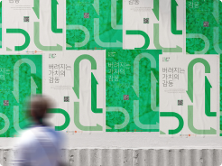

Previous personal work
-
마이두레
2022 UI/UX Design
1인 가구가 늘어나며 바뀐 소포장 트렌드는 농산물 직거래 구매를 하는 데 있어 큰 난관이다. 옛 조직 단위인 두레와 같은 조직을 제공 하는 플랫폼은 1인가구와 농촌 부흥에 큰 도움이될 것이다.
-
Touch For Good
2022 Brand Design
기존터치포굿의로고는순환에관한아이디어가돋보이지않았다.개선제안하는터치포굿의로고에는자원순환에관한그래픽이참고되었다. 사회적 기업 터치 포 굿의 기업적 가치는 순환, 재발견, 리 싱크(Re-sync)이다. 알파벳 O의 배치로 이 공통점을 재발견하여 순환의 가치를 더했다. 기존의 것들을 새로 발견하여 새로운걸 디자인하여 만들어내는 기업의 가치와도 상응한다.
-
소로리 볍씨 - Rice seed
2022 Package Design
우리나라 청주(淸酒)는 정종(正宗)이라는 이름으로 일제에게 빼앗겼으며, 쌀농사의 기원은 청주 중국 후난성에서 발굴된 볍씨로 세계에 잘못 알려졌다. 인류 최초의 쌀인 청주(淸州)의 소로리 볍씨 (小魯里볍씨)에 의미를 담아 잘못 알려진 우리나라의 역사를 술을 통해 새로 알린다.

